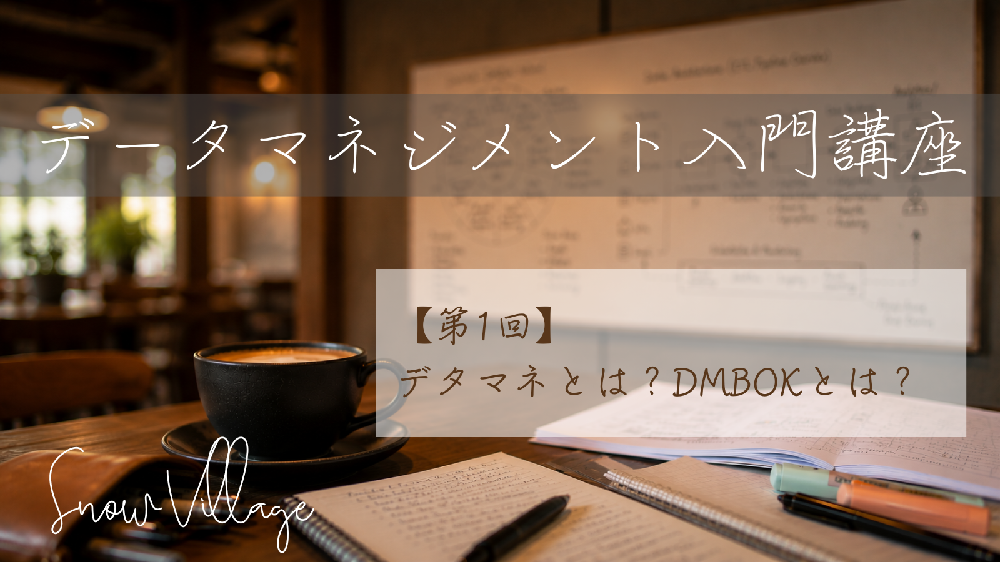

これからデータマネジメントを学ぶ方へ
データ活用の重要性が高まる一方で、データマネジメントは専門用語が多く、単一の正解がないことで学習のハードルが高く初心者には敷居が高い領域です。
「データマネジメント入門講座」は SnowVillage データマネジメント分科会で集めたナレッジを初心者から体系的に学んでいただけるように設計したオンライン講座です。データ基盤の設計・運用やデータドリブン組織運営に携わるすべての方を歓迎します。
-

第1回: デタマネとは？ DMBOKとは？
講師: 株式会社 電通総研 小松崎 武 氏
データマネジメントを語るうえで欠かせない DMBOK を柱とし、これから学習するデータマネジメントの全体感を俯瞰する内容です。